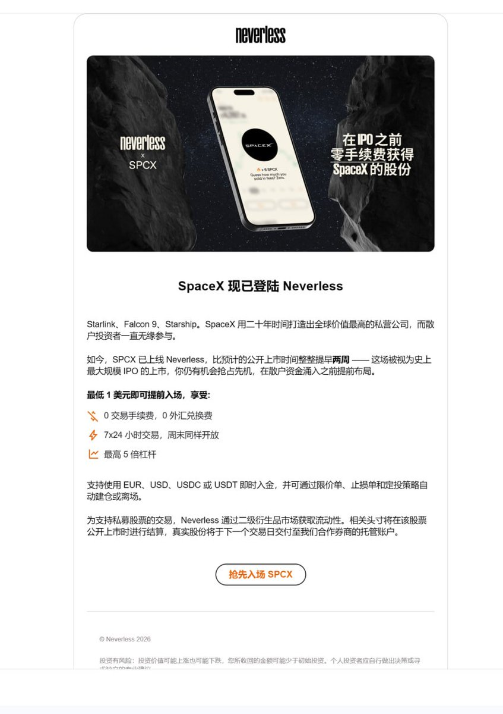
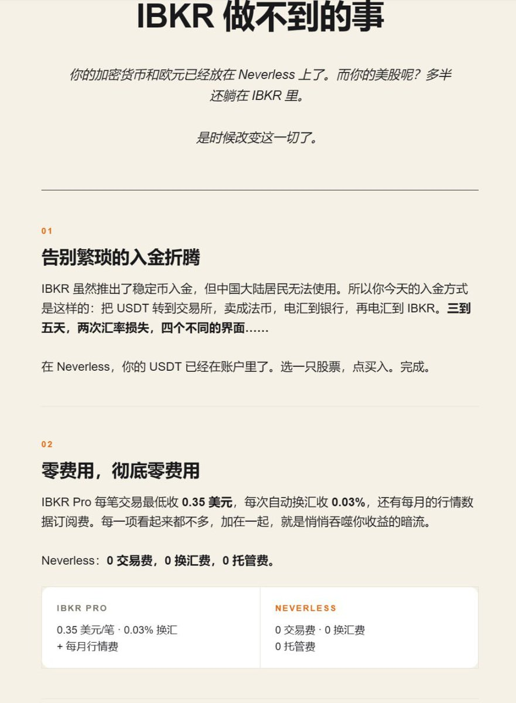

Neverless上了SpaceX，此前他家就可以在美股盘前阶段交易 SPCX，不需要等到正式开盘(金融科技包装的新型投资平台)
本质上你买的股票基金是以记账的形式登记在你名下，但实际买卖盘由平台内部券商系统操作完成，并非真走SWIFT系统，而是由平台内部券商系统操作完成。目前只有最基础功能不支持消费实体卡环节，更像是一个多功能带炒股的欧洲电子银行的中转站。
个人建议：正规券商上市后SPCX股票 ＞ 正规券商旗下基金包含SPCX ＞ 各路持牌银行机构/互联网网络银行券商 ＞ 国内指数关联的追踪基金产品 ＞＞ 各路资金盘电子盘对赌加密货币交易所
千万不要去碰加密货币各路交易所的资金盘，这玩意连金融衍生品都不算。纯赌博，建议找正规平台且等上市再说，不要为了眼前的利益把钱给撒进海里
本质上你买的股票基金是以记账的形式登记在你名下，但实际买卖盘由平台内部券商系统操作完成，并非真走SWIFT系统，而是由平台内部券商系统操作完成。目前只有最基础功能不支持消费实体卡环节，更像是一个多功能带炒股的欧洲电子银行的中转站。
个人建议：正规券商上市后SPCX股票 ＞ 正规券商旗下基金包含SPCX ＞ 各路持牌银行机构/互联网网络银行券商 ＞ 国内指数关联的追踪基金产品 ＞＞ 各路资金盘电子盘对赌加密货币交易所
千万不要去碰加密货币各路交易所的资金盘，这玩意连金融衍生品都不算。纯赌博，建议找正规平台且等上市再说，不要为了眼前的利益把钱给撒进海里

